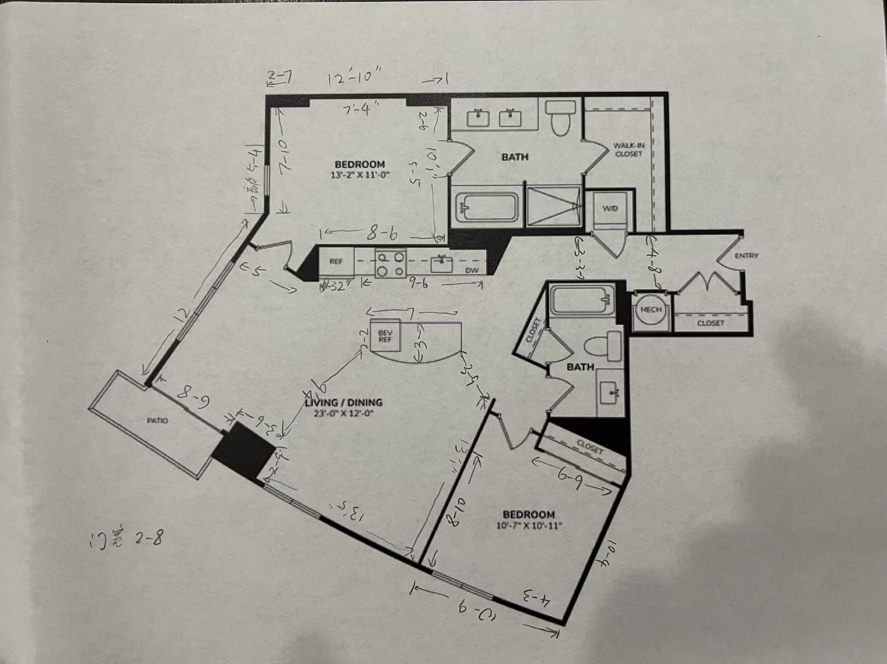

家具规划器
2室2卫 · 客厅 23'×12' · v2.1
2D 平面
3D 渲染
娃娃屋
室内视角
白天
夜晚
空白方案
参考方案A（沙发对电视墙）
参考方案B（沙发床+方桌）
载入方案
编辑墙体
cm
英尺
照片级渲染
底图对照
原户型图
导出图片
导出布局
导入布局
选择/调整
画墙
画柱/异形
加门
门宽
cm
端点：整体
类型：平开
换铰链侧
换开向
深木色
实墙
玻璃/窗
门洞
开口
厚
cm
删除所选
重置内置
完成
照片级渲染中…
取消
＋ 自定义家具（网上看中的）
添加

拖动=移动 · 圆点手柄/R键=旋转（按住Shift自由角度）· D=复制 · Delete=删除 · 滚轮=缩放 · 拖空白=平移
红色描边 = 与其他家具重叠
正在生成 3D 场景…
未选中家具
点击左侧目录添加家具；点击画布中的家具进行编辑。所有尺寸均为真实比例。
宽×深×高
旋转
°
+90°
颜色
色温
亮度
价格
链接
—
复制
删除
已放置（
0
）